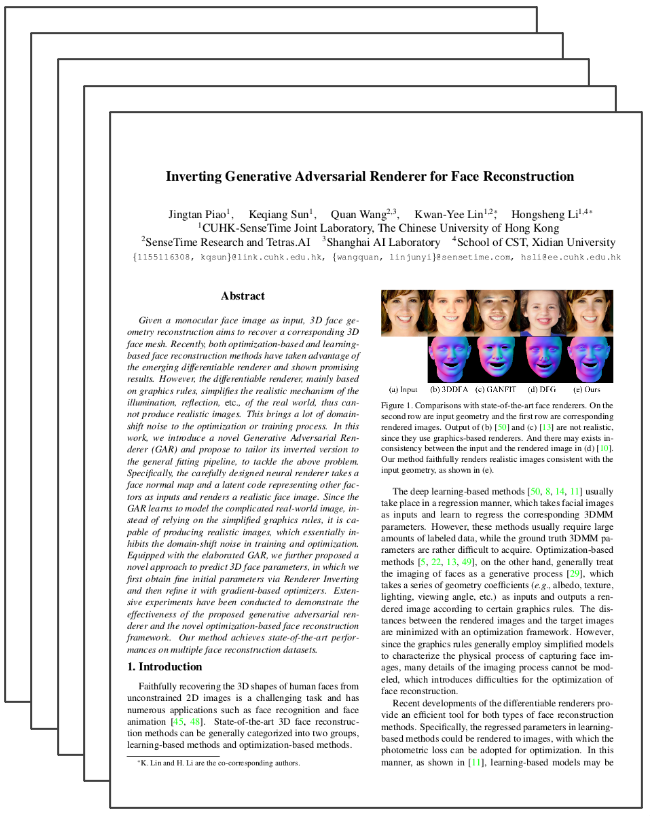

Inverting Generative Adversarial Renderer for Face Reconstruction
|
1CUHK-SenseTime Joint Laboratory,
Chinese University of Hong Kong
|
2SenseTime Research andTetras.AI
|
3Shanghai AI Laborator
|
4School of CST,
Xidian University
|
Given a monocular face image as input, 3D face geometry reconstruction aims to recover a corresponding 3Dface mesh. Recently, both optimization-based and learning-based face reconstruction methods have taken advantage ofthe emerging differentiable renderer and shown promisingresults. However, the differentiable renderer, mainly basedon graphics rules, simplifies the realistic mechanism of the illumination, reflection, etc., of the real world, thus cannot produce realistic images. This brings a lot of domain-shift noise to the optimization or training process. In this work, we introduce a novel Generative Adversarial Renderer(GAR) and propose to tailor its inverted version to the general fitting pipeline, to tackle the above problem. Specifically, the carefully designed neural renderer takes a face normal map and a latent code representing other factors as inputs and renders a realistic face image. Since the GAR learns to model complicated realworld images, instead of relying on simplified graphics rules, it is capable of producing realistic images, which essentially inhibits the domain-shift noise in training and optimization. Equipped with the elaborated GAR, we further proposed a novel approach to predict 3D face parameters, in which we first obtain fine initial parameters via Renderer Inverting and then refine it with gradient-based optimizers. Extensive experiments have been conducted to demonstrate the effectiveness of the proposed generative adversarial renderer and the novel optimization-based face reconstruction framework. Our method achieves state-of-the-art performances on multiple face reconstruction datasets.
Paper
|

|
Inverting Generative Adversarial Renderer for Face Reconstruction
Jingtan Piao, Keqiang Sun, Quan Wang, KwanYee Lin*, Hongsheng Li*
Computer Vision and Pattern Recognition, CVPR 2021.
|
{kind=link}
{kind=link}